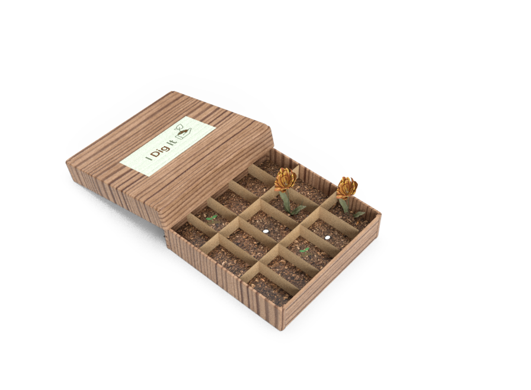

I Dig It is a competitive, two player gardening Eurogame that forces individuals to literally get their hands dirty.
Sept - Oct 2018
Transformational Game Design Studio is a HCI course taught at Carnegie Mellon University that allows students to work with real life clients to solve real life problems through the fun of games and playful experiences.
Task: Phipps Conservatory and Botanical Gardens, built in 1893 is one of Pittsburgh's most prized landmarks, dedicated to displaying and teaching the beauty of nature and plants. We were tasked with helping Phipps with promoting their Homegrown program in hopes of increasing community gardening. How were we going to create a game that helped players through garden planning and developing a sense of self-efficacy?
Motivational Theories - Transactional Model
Get people to touch dirt.
From our playtest in class, we realized we had two competing game ideas. A more cerebral strategy area control game and a more party-like game that encouraged players to really dig in the dirt. After a couple in-team playtests and discussions, we decided to focus on this more party-like game. We wanted to increase players interaction with the dirt and decided to bury sabotage cards within the soil for players to dig up when planting their seeds. We also thought an area control win condition would no longer suit this version. A better win condition, we theorized, was to get four spaces connected to each other. This gave players opportunities to dig and mess with each other.
Event cards
Sabotage cards
Occupational therapy